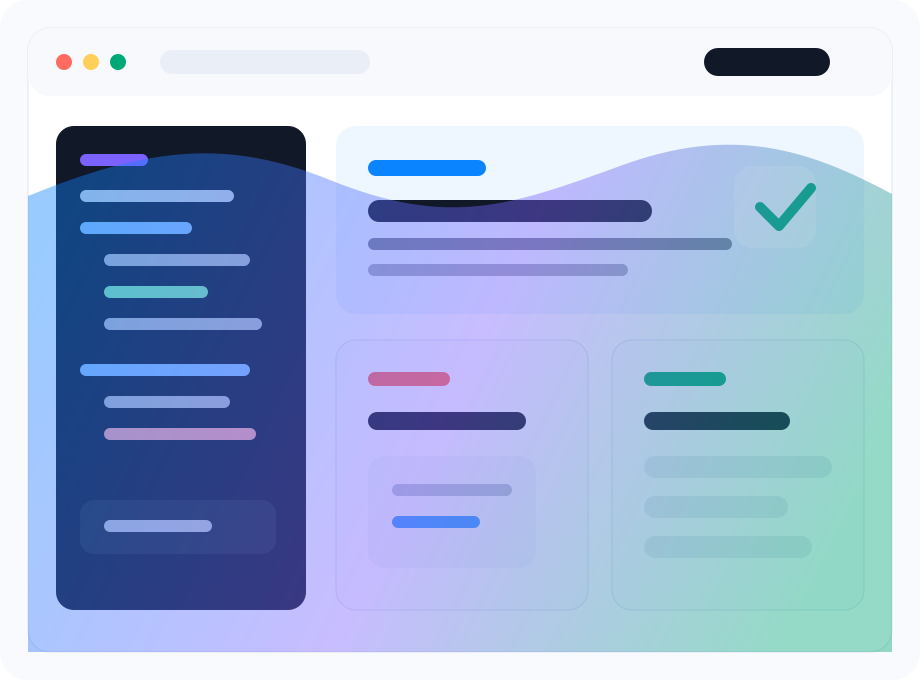

Верстка без хаоса
Соблюдаю структуру, семантику, состояния элементов и адаптив под реальные экраны.
Junior Frontend Developer
Собираю аккуратные, адаптивные и понятные интерфейсы на HTML, CSS, JavaScript и React. Быстро вхожу в задачи, внимательно отношусь к деталям и пишу код, с которым удобно работать команде.

Interest
Для junior-разработчика важны не только технологии, но и рабочее отношение: понятная коммуникация, внимательность к макетам и готовность быстро закрывать обратную связь.
Соблюдаю структуру, семантику, состояния элементов и адаптив под реальные экраны.
Слежу за отступами, типографикой, hover-состояниями и тем, чтобы интерфейс выглядел завершенным.
Разбираюсь в чужом коде, задаю точные вопросы и фиксирую выводы, чтобы не наступать на одну проблему дважды.
Уважаю процессы, работаю через Git, понимаю ценность code review и прозрачных статусов.
Desire
База для уверенного старта во frontend-команде: от чистой верстки до простых SPA и работы с API.
Мой фокус
Люблю задачи, где нужно превратить макет в живой экран: адаптив, интерактивность, микросостояния и аккуратная структура компонентов.
Proof
Эти карточки можно заменить на реальные работы: добавить ссылки на GitHub, демо и короткое описание вашей роли.
Landing page
Адаптивная верстка, чистая структура секций, CTA-блоки, формы и аккуратная мобильная версия.
Обсудить похожий проектDashboard UI
Карточки метрик, таблицы, фильтры, состояния загрузки и компонентный подход для повторяемых блоков.
Добавить ссылку на демоReact app
Работа с состоянием, запросами, списками, поиском и пользовательскими сценариями.
Показать репозиторийAction
Напишите, если нужен junior-разработчик на стажировку, проектную задачу или позицию с наставничеством. Я открыт к тестовым, ревью и живому разговору о задачах.